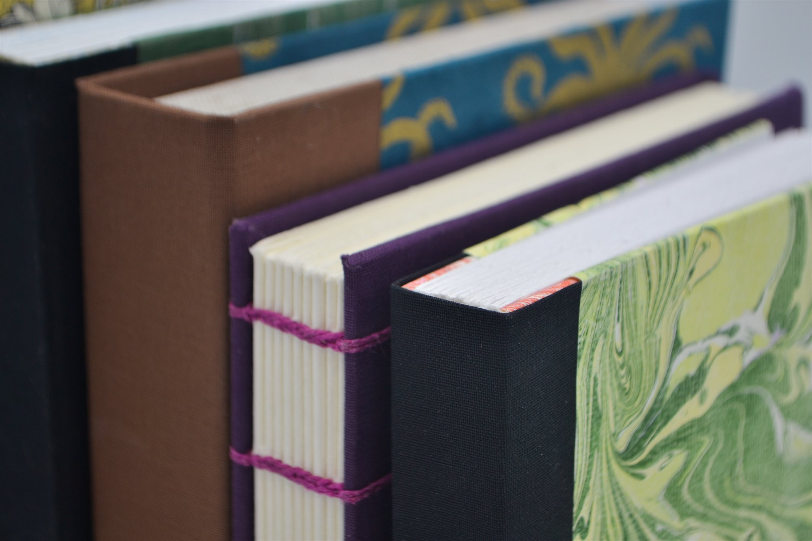
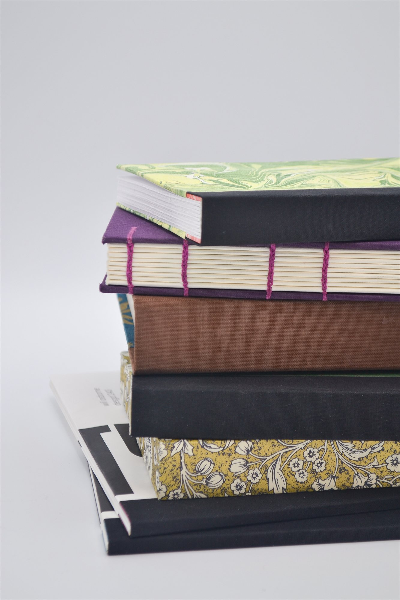
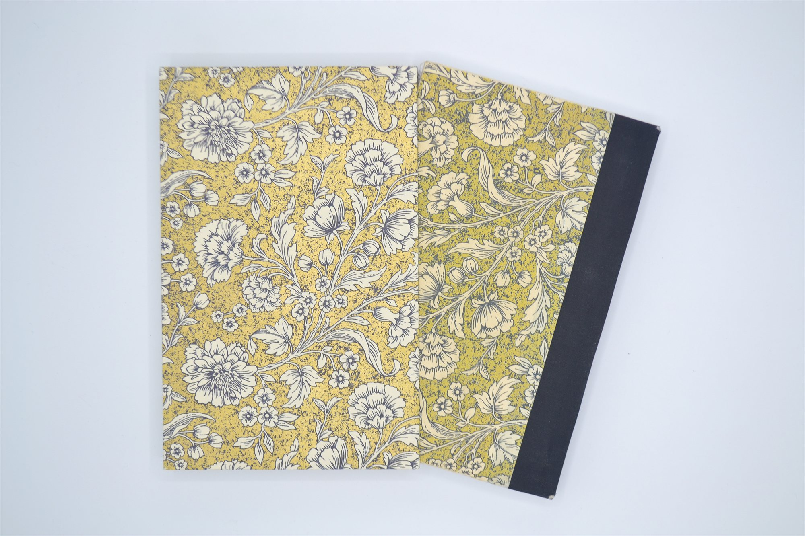
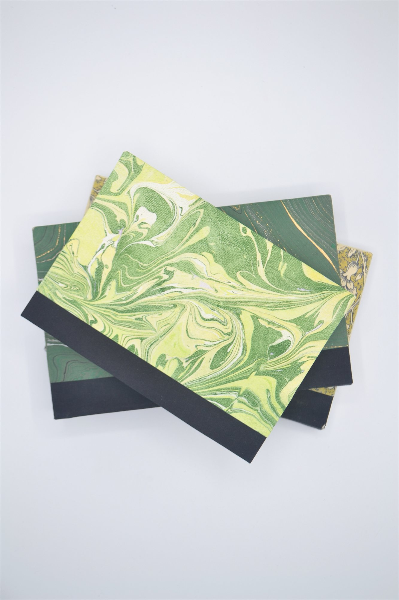
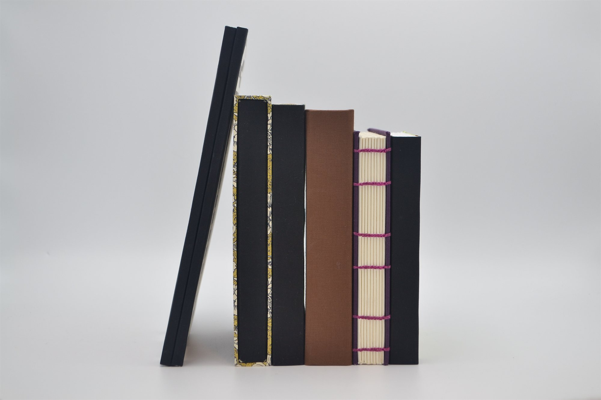

Bookbinding
I have some experience with book arts and box making, showcased below. I like the precision of cutting and folding signatures, and sewing a text block is almost meditative — as long as the thread doesn't tangle up.
Overview
I was taught bookbinding by Judy Sommerfeldt in 2019. The timing turned out to be perfect, because it's one of the activites that got me through Covid. There's a deep satisfaction in turning a pile of loose papers, some thread, and a bit of cloth into a book. There's a differnt kind of satisfaction in knowing that the techniques I'm using are the same ones used by book binders centuries ago.





Next project
Fabric Design →